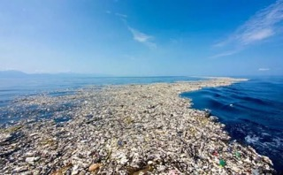
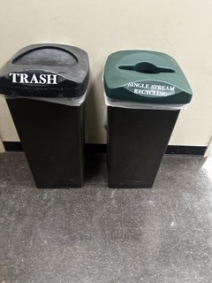

Trash: A Journey of Reflection and Responsibility
Hello everyone, welcome to my blog. Today, I'm diving into the fascinating world of trash, waste, garbage, rubbish, and all those things we discard without much thought. But before I toss these items away, I want to take a moment to reflect on their significance in my life and how they've served me. Inspired by experts like Brian Thill and Sarah Newman, who have delved deep into the complexities of waste, I have also embarked on a personal journey to document my trash and explore its meaning such that I can try and reduce my trash footprint. Personally I believe that by looking at someone’s trash disposal habits and consciously acknowledging their trash footprint and documentation can make the difference between because humans will have to reflect on every trash that they produce and potentially reduce their trash footprint. In addition as Thill discusses unconscious trash disposal hence based on his idea I was deeply moved hence I have decided to document this trash project and will be doing it many more weeks to come.
Inspiration from Waste Experts: Thill, Newman, and Muniz
My first inspiration for this project, Brian Thill's insights resonate deeply with me as I embark on this project because he distinguishes between casual disposal without reflection and intentional waste disposal. He aptly describes the indifference engine that often drives littering, highlighting how we discard things without a second thought. “The indifference engine that drives litter is the flip side of desire. It’s the waste we could not bring ourselves to care even a little bit about, when we had, just moments before, cared about some part of the thing we’re throwing out very much.” (Page 20) This quote really resonated with me because even when I was documenting I noticed that there was certain trash that I wasn’t even documenting because I decided they weren’t even important. Hence, As I engage in documenting my trash, I aim to bring attention to the items I discard, recognizing their value and potential impact on the environment.
Next, Sarah Newman's perspective adds another layer to my understanding of waste. She advocates for a nuanced approach to waste, moving beyond simplistic narratives. By engaging with initiatives like "Trash of the Week," Newman suggests that we can deepen our awareness of how societies perceive and manage waste. Her emphasis on the cultural and historical dimensions of waste resonates with me, as it shows the importance of contextualizing our relationship with trash. Like archaeologists analyzing artifacts, documenting our trash allows us to reflect on our consumption habits and consider more sustainable practices.
Similar to Newman’s idea of archaeologists, Vik Muniz's words, "Garbage and ashes may transcend into a work more complex than its source material suggests, and there is always new meaning to discover" encapsulate the essence of my own journey into the world of trash documentation. His artworks make us reconsider our relationship with the objects that surround us, urging us to recognize the inherent value in the discarded and overlooked. Like Muniz, I see the potential for transformation and renewal in the act of reflecting on our waste. By engaging with our discarded items with intention and curiosity, we can uncover hidden narratives and explore the intricate web of human desire that underlies our consumption habits.
The Trash Footprint: Why it Matters
So why, do all of this? What's the big deal about reducing the trash footprint and why should everyone be considering this sort of reflection? Well, I was inspired by the problem of the Pacific Garbage Patch. Just looking at the massive patch that humans have collected throughout the years, all gathered into one large patch in the ocean, and seeing the wildlife be affected was a big deal. I was especially inspired by the article by the Marine Debris Program, where they state, “Marine life can be caught and injured, or potentially killed in certain types of debris. Lost fishing nets are especially dangerous [...]” I think marine life is an integral part of our planet; it is said that all living things evolved through marine life first. If this garbage patch is affecting the marine ecosystem, then I personally wanted to start with self-reflection to understand my impact on the total trash footprint. I also researched what other people are doing to solve this and found online trash projects focusing on this issue, like Trash club online.
 So, join me as I explore the world of trash, one discarded item at a time. Together, let's uncover the hidden stories behind our waste and discover how we can make a difference in our environment and our lives.
References:
Bogost, Ian. “Ontography: Revealing the Rich Variety of Being”. Alien Phenomenology, or What It’s Like to Be a
Thing.
Lee, Tori. “An Archaeologist Talks Trash”. University of Chicago News. https://news.uchicago.edu/story/archaeologist-talks-trash.
Parker, Dianna. “Garbage Patches.” OR&R’s Marine Debris Program, Marine Debris Program, 11 July 2013, link
https://trashclub.online/blog/